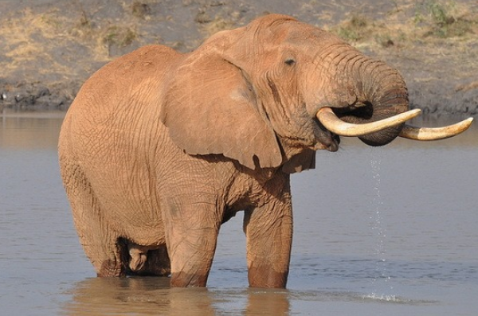

Самые большие животные планеты
Что же это за животные, и в каких природных условиях они обитают об этом мы сегодня и поговорим. Рейтинг
основан на массе, высоте и также длине животных.
3 место. Африканский слон
Африканский слон (лат. Loxodonta africana) — самое большое сухопутное животное обитающее на земле.
Включает в себя два вида – лесной и саванный. Занимает в этом рейтинге почетное третье место. При высоте
от 3 до 3,5 метров и длине туловища – 6-7,5 м масса этих животных может достигать до 6, а то и 12
тонн. Самки африканского слона поменьше самцов: они вырастают до 2,7 метров в высоту и 5,4-6,9 м – в
длину.

Особенности
- Высота - 3 до 3,5 метров
- Масса - до 12 тонн
Узнать больше о Слоне
2 место. Кашалот
Следующий представитель — кашалот (лат. Physeter catodon) – единственный на сегодняшний день представитель
семейства кашалотовых. Являетсякрупнейшим среди зубатых китов. Самец кашалота вырастает до 20 м в
длину, а весит он до 50 т.Самки менее внушительных размеров – от 11 до 13 м, а весят около 15 т.

- Длинна - до 20 метров
- Масса - до 50 тонн
Узнать больше о Кашалоте
1 место. Синий, или же голубой кит
Самое большое животное из ныне живущих на Земле – синий, или голубой кит (лат. Balaenoptera musculus). Даже динозавры не могут тягаться с ним – его размеры впечатляющи. Это морское млекопитающее вырастает в длину до 30 метров , вес может быть более 180 т, даже язык этого гиганта весит около 2,7 тонн (размером с азиатского слона, средних размеров). Масса сердца синего кита около 600 килограмм – это самое большое сердце в мире.

Особенности
- Длинна - до 30 метров
- Масса - до 180 тонн
Узнать больше о Синем ките